MITEX 2026 · Индия · Стенд 7B11B
FMI LIMITED
Карточка проверена 10 ноября 2026, 09:28 · Источник ↗ · Снимок оригинальной карточки ↗
О компании
Основанная в 1950 году, компания FMI Limited является крупнейшим производителем измерительных рулеток, пузырьковых уровней и измерительных колёс на Индийском субконтиненте. Компания отличается высокой степенью вертикальной интеграции и располагает современными собственными мощностями для литья пластмасс под давлением и холодной прокатки стали. В 2018 году FMI Limited достигла своей долгосрочной цели — объёма производства более 150 000 высококачественных измерительных рулеток в день. Сегодня ассортимент FREEMANS выходит далеко за рамки линейно-измерительного инструмента и включает широкий выбор ручного инструмента, прецизионного измерительного инструмента, цифровых измерительных приборов и оснастки для электроинструмента. Мы гордимся тем, что FREEMANS дважды был удостоен статуса Superbrand — в 2023 и 2025 годах. Эта престижная награда отражает доверие и лояльность наших клиентов и подтверждает лидирующие позиции бренда в сегменте измерительного инструмента.
Контакты
Все рубрики участника
Зал
- Зал № 7
Участник выставки
- MITEX
Фотографии и изображения


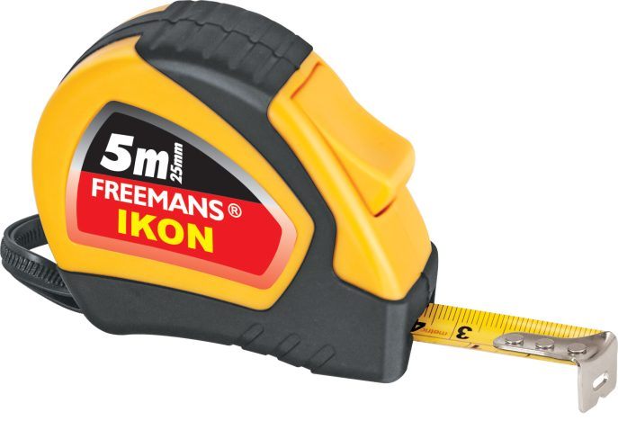
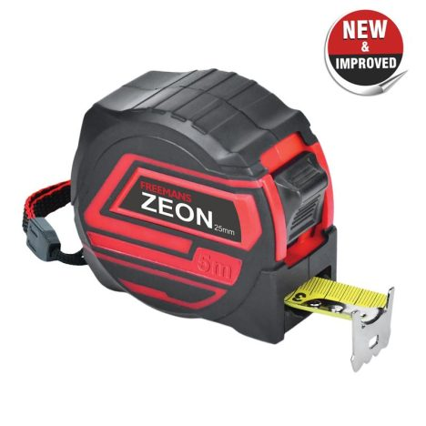
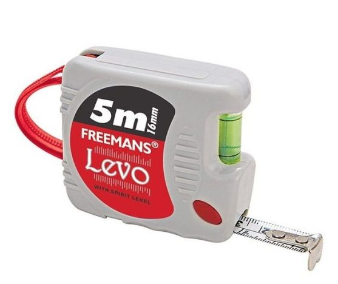
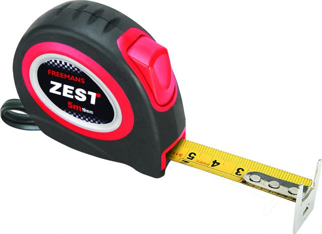
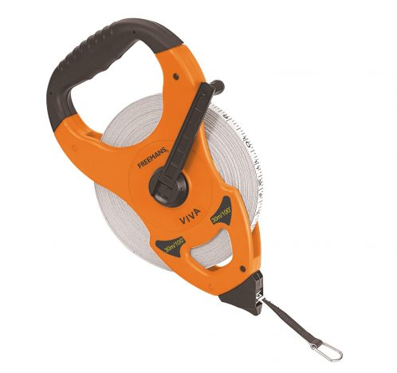


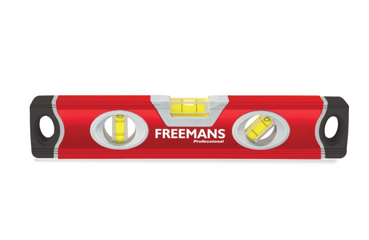

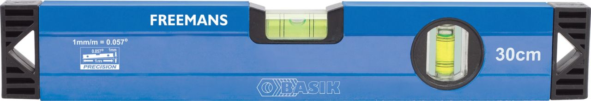
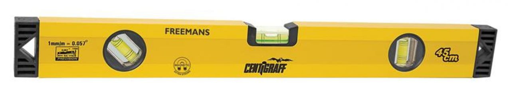
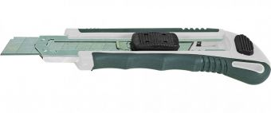
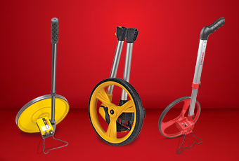
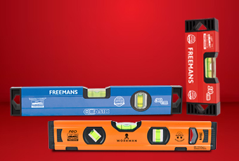
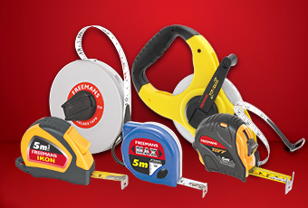
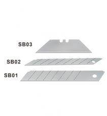
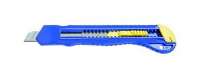
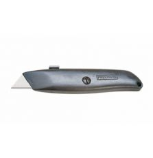
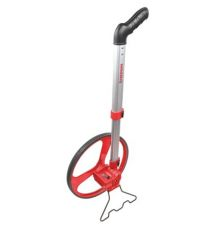
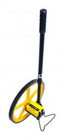
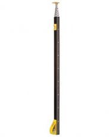
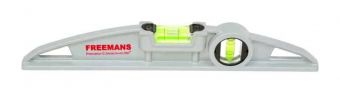
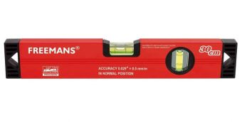
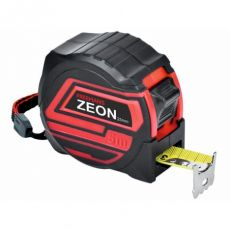
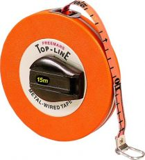
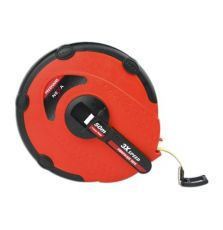
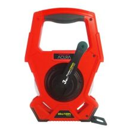
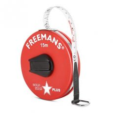
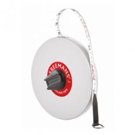
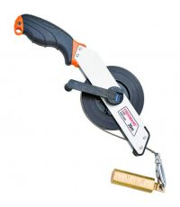
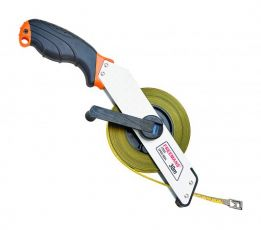
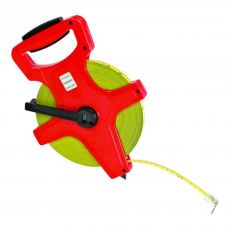
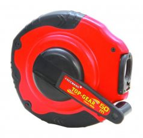
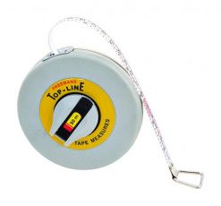
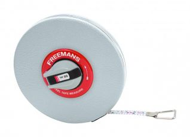
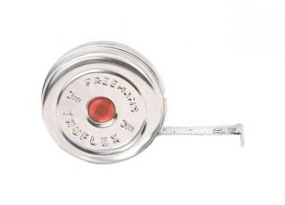
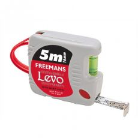
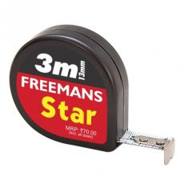
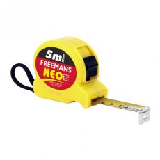
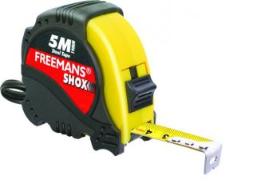
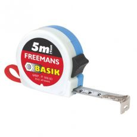
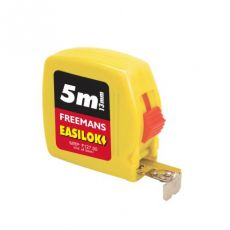
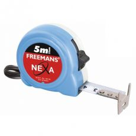
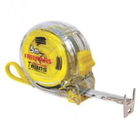
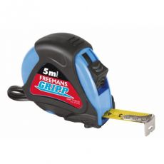
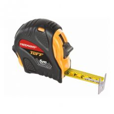
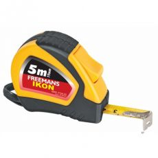
Видео, каталоги и документы
В доступной карточке нет видео или документов. Смотрите сайт участника.
Каталог продукции участника
Материалы каталога
Utility Knives Measuring Wheels Spirit Levels Measuring Tapes
Материалы каталога
Utility Knives FREEMANS carry a wide range of Utility Knives and spare Blades Bi-material soft feel handle Large button for easy extension & retraction of blade Auto-locking blade Blade storage tray Spare Blades-SB Snap Off Blade Cutters-CL/CS Utility Knives-UK
Spare Blades-SB
Spare Blades-SB Utility Knives & Cutters Blades made of C60 Available Sizes 100x18mm (SB01 for CL/CLH models) 80x9mm (SB02 for CS model) 60x19mm (SB03 for UK model)
Snap Off Blade Cutters-CL/CS
Snap Off Blade Cutters-CL/CS Unbreakable ABS Case Pocket Clip Blade Size 18mm- 100x18mm Blade Size 9mm- 80x9mm vailable Sizes Large 100x18mm Small 80x9mm
Utility Knives-UK
Utility Knives-UK UK01- Durable zinc case UK02 - ABS & zinc case Blade size - 60x19mm Available Sizes Metric155mm IMPERIAL 6inch
Материалы каталога
Measuring Wheels The FREEMANS portfolio boasts a range of highly accurate 150mm (6-Inch) and 300mm (12-Inch) Measuring Wheels and also includes robust Digital Measuring Wheels. FREEMANS Measuring Wheels are ideal for measuring large surfaces, external and internal spaces single-handedly, including construction sites, paths, roads and fields. 30cm (12-Inch) Foldable Measuring Wheel Aluminium Measuring Wheel (12.5 Inch) 30cm (12-Inch) ABS Measuring Wheel
30cm (12-Inch) Foldable Measuring Wheel
30cm (12-Inch) Foldable Measuring Wheel COMPACT AND PORTABLE: Effortlessly fold your measuring wheel with the quick press of a button. 12-INCH-HIGH TRACTION PU TIRE: Durable rubber tire glides easily across different types of ground conditions. SOFT BI-MATERIAL HANDLE for an ergonomic and comfortable grip. 5 DIGIT MECHANICAL COUNTER with quick reset button. Measure up to 9999.9m with a least count of 10cm. Equipped with FOLDING STAND and a complimentary carry bag. IDEAL FOR MEASURING LARGE surfaces, external and internal spaces single-handedly, including construction sites, paths, roads and fields. Available Sizes 10,000m
Aluminium Measuring Wheel (12.5 Inch)
Aluminium Measuring Wheel (12.5 Inch) Soft ergonomic grip Mechanical 5-digit counter 12.5-inch aluminium die casted wheel Adjustable height Folding stand Available Size 10,000m
30cm (12-Inch) ABS Measuring Wheel
30cm (12-Inch) ABS Measuring Wheel (1) MEASUREMENT RANGE of 0-10km. (2) Least count: 1m. EXTREMELY LIGHTWEIGHT AND DURABLE 30cm (12) ABS wheel with wear resistant special rubber tyre for improved traction and longer life. MECHANICAL 5 DIGIT COUNTER with quick reset lever. Equipped with FOLDING WHEEL MOUNT, TWO-SECTION TELESCOPIC HANDLE and complimentary carry bag. IDEAL FOR MEASURING LARGE surfaces, external and internal spaces single-handedly, including construction sites, paths, roads and fields. Available Sizes 10,000m
Материалы каталога
Spirit Levels We are the largest manufacturers of Spirit Levels in India with an extensive portfolio catering to a large variety of jobsite applications. We ensure world-class quality control with in-house injection moulding, cutting, punching and powder coating operations. Our range starts from lightweight and economical Levels and includes heavy duty Aluminium profiles as well as Professional Spirit Levels. FREEMANS Spirit Levels are available with or without magnets. Our Spirit Levels claim an unmatched lifetime warranty. BASIK BOX SECTION ALUMINIUM Spirit Level PROFESSIONAL BOX SECTION ALUMINIUM Spirit Level TELESCOPIC MEASURES TRAPEZOIDAL SPIRIT LEVEL BI-MATERIAL TORPEDO Spirit Level BOX SECTION ALUMINIUM Spirit Level
BASIK BOX SECTION ALUMINIUM Spirit Level
BASIK BOX SECTION ALUMINIUM Spirit Level 180* and 90* HIGH VISIBILITY VIALS facilitate easy reading of measurements. ECONOMICAL, LIGHT aluminium profile. OPTIONAL MAGNETIC base for hands free use on metal surfaces. MANUFACTURED TO AN ACCURACY of 0.057, 1mm/m, with the highest quality raw materials and components. LIFETIME WARRANTY against manufacturing defects. Available Sizes METRIC 100mm 300mm 450mm 600mm 900mm 1000mm 1200mm IMPERIAL 4inch 12inch 18inch 24inch 36inch 40inch 48inch
PROFESSIONAL BOX SECTION ALUMINIUM Spirit Level
PROFESSIONAL BOX SECTION ALUMINIUM Spirit Level MAXIMUM ACCURACY: Electronically calibrated to an accuracy of 0.029 degree/0.5mm/m. ACCURATE MEASUREMENTS: Milled surface for higher accuracy. 5 YEAR WARRANTY: Magnifying block vials for better visibility, with 5-year warranty against vaporisation/leakage under normal working conditions. SHOCK ABSORBENT: Bi-material soft feel shock absorbent end caps for enhanced durability. EASY HANDLING: Sizes above 30cm come with convenient carrying handles. Available Sizes METRIC 300mm 450mm 600mm 900mm 1000mm 1200mm IMPERIAL 12inch 24inch 36inch 40inch 48inch
TELESCOPIC MEASURES
TELESCOPIC MEASURES 180⁰ vial Telescopic sections Easy to read measurements Useful for single handed measurement in rough building sites, wood/timber, concrete building structures and shuttering work Available Sizes METRIC 3m 4m 5m IMPERIAL 10ft 16ft
TRAPEZOIDAL SPIRIT LEVEL
TRAPEZOIDAL SPIRIT LEVEL 180⁰, 90⁰ vials Die cast zinc body Magnetic base (Optional) Accuracy: 0.057⁰, 1mm/m Available Sizes METRIC 300mm 400mm 500mm 600mm IMPERIAL 12inch 24inch
BI-MATERIAL TORPEDO Spirit Level
BI-MATERIAL TORPEDO Spirit Level 180⁰, 90⁰ and 45⁰ high visibility vials facilitate easy reading of measurements. Unbreakable ABS case stands up to the toughest jobsite demands. Magnetic Base for hands free use on metal surfaces. Manufactured to an Accuracy of 0.057⁰, 1mm/m, with the highest quality raw materials and components. Lifetime warranty against manufacturing defects. Available Sizes METRIC 230mm IMPERIAL 9inch
BOX SECTION ALUMINIUM Spirit Level
BOX SECTION ALUMINIUM Spirit Level 180⁰, 90⁰ and 45⁰ High Visibility, Shock Resistant, Block Vials facilitate easy reading of measurements. HEAVY DUTY ALUMINIUM BODY stands up to the toughest jobsite demands. SHOCK ABSORBENT END CAPS for added durability. OPTIONAL MAGNETIC BASE for hands free use on metal surfaces. MANUFACTURED TO AN ACCURACY of 0.029*, 0.5mm/m, with the highest quality raw materials and components. Available Sizes METRIC 100mm 300mm 400mm 450mm 500mm 600mm 800mm 900mm 1000mm 1200mm 1500mm 1800mm 2000mm IMPERIAL 4inch 12inch 24inch 36inch 40inch 48inch 60inch 70inch
Материалы каталога
Measuring Tapes We manufacture an extensive range of tape measures in various materials and sizes to suit every jobsite requirement. Each FREEMANS measuring tape is designed and manufactured at our dedicated facility, ensuring the highest standards of accuracy and durability. Explore our unmatched range of pocket tapes, long steel tapes, fiberglass tapes, and metal wire measuring tapes. we are the Biggest Pocket measuring tape manufacturer with daily capacity of 200,000 tapes. ZEON Measuring Tape METAL WIRED TOP-LINE Measuring Tape NEXA Measuring Tape – NX Acura Measuring Tape – AC GOLD-STAR Measuring Tape FIBREGLASS LEATHERETTE Measuring Tape Carbon Steel/ Stainless Steel Open Reel Dip Tape Steel Open Reel Measuring Tape Steel Open Reel ABS Case Measuring Tape TOP-GEAR Measuring Tape Steel TOP-LINE Measuring Tape Steel Leatherette Measuring Tape TRUFLEX Measuring Tape LEVO Measuring Tape STAR Measuring Tape NEO Measuring Tape SHOX Measuring Tape BASIK Measuring Tape with Click-Lock EASILOK Measuring Tape NEXA Measuring Tape TRANS Measuring Tape GRIPP Measuring Tape TUFF Measuring Tape IKON Measuring Tape ZEST Measuring Tape
ZEON Measuring Tape
ZEON Measuring Tape 1- Click-Action Front Lock button can be used to hold the tape blade in place when extended, facilitating easier measurements over longer distances. 2- Pause button allows the user to temporarily hold the tape blade in place when extended, facilitating quicker and easier measurements over longer distances. DURABLE CONSTRUCTION: FREEMANS ZEON measuring tape features a robust ABS case for long-lasting durability and reliable performance in various working conditions. 1- Unbreakable ABS case stands up to the toughest jobsite demands. 2- Case over moulded with non-slip rubber for a better and more comfortable grip. 1. The tape blade is coated with our Nylon Coating Technology, making it highly resistant to abrasion and repeated use, with a 10X longer life 2. The tape blade has a matt Glare-Free finish, making it easier to read measurements in bright outdoor conditions. Equipped with a Belt Clip for easy storage and portability in and around the jobsite. Manufactured to Class II Accuracy, with the highest quality raw materials and components. Available Sizes METRIC 3m:19mm 5m:25mm 7.5m:32mm 8m:32mm IMPERIAL 10ft:3/4inch 16ft:1inch 25ft:1.25inch
METAL WIRED TOP-LINE Measuring Tape
METAL WIRED TOP-LINE Measuring Tape UNBREAKABLE ABS CASE: Unbreakable ABS case stands up to the toughest jobsite demands. CASE REINFORCED WITH STAINLESS STEEL BAND: The case is reinforced with a stainless-steel band and mouth to provides greater durability and dependable performance, even under requent use. DURABLE WINDING MECHANISM: Heavy duty winding mechanism ensures long trouble-free usage. 16MM WIDE TAPE RIBBON: General purpose tape woven with copper wire for additional strength. Coated with special paints for protection against moisture, wear & tear. Available Sizes METRIC 5m 7.5m 10m 15m 20m 30m 50m IMPERIAL 16ft 25ft 32ft 50ft 65ft 100ft 165ft
NEXA Measuring Tape – NX
NEXA Measuring Tape – NX Long Angular Rewind Handle: Ergonomically designed long angular handle provides a comfortable grip and enables faster, effortless tape rewinding. Convenient Hand Strap: Integrated hand strap offers a secure hold, improved control, and easy portability during fieldwork. Soft-Touch Rubberized Case: Durable rubberized housing delivers a comfortable, non-slip grip while protecting the tape from impacts and everyday wear. Spring-Loaded Roller: Advanced spring-loaded roller helps prevent tape twisting and kinking during rewind, ensuring smooth operation and extending tape life. Claw-Type End Hook: Engineered for a secure grip and reliable anchoring during measurements. 3X Faster Rewind Mechanism: High-speed gear mechanism delivers quick and effortless tape retrieval, improving productivity. Available Sizes METRIC 30m 50m IMPERIAL 100ft 164ft
Acura Measuring Tape – AC
Acura Measuring Tape – AC 3X Faster Rewind Mechanism: Advanced gear-driven rewind system enables quick and effortless tape retrieval, improving productivity on the job. 50% Less Stretch with Extra-Wide Tape Ribbon: Durable, extra-wide blade minimizes stretching for enhanced stability and consistent measurement accuracy. Smooth Blade Retraction: Engineered for controlled, smooth, and reliable blade retraction, ensuring safe and convenient operation. Extra-Strong Hook Connection: Reinforced hook attachment provides greater durability and dependable performance, even under frequent use. Class III Accuracy: Manufactured to meet Class III accuracy standards for reliable and consistent measurements across a wide range of applications. Claw-Type End Hook: Engineered for a secure grip and reliable anchoring during measurements. Backed by a lifetime warranty covering manufacturing defects Available Sizes METRIC 30m 50m IMPERIAL 100ft 164ft
GOLD-STAR Measuring Tape
GOLD-STAR Measuring Tape FIBERGLASS TAPE RIBBON IS non-conductive, non-creasing, weather resistant and durable against wear and tear. The FREEMANS Goldstar Plus fibreglass tape blade is manufactured with 2mm graduations. UNBREAKABLE ABS CASE reinforced with STAINLESS STEEL BAND and MOUTH. QUICK WINDING HANDLE ensures long trouble-free usage. HEAT SEALED MARKINGS on tape ribbon for prolonged life. CE (MID) and ISI (BIS) certified. Available Sizes METRIC 7.5m 10m 15m 20m 30m 50m IMPERIAL 25ft 32ft 50ft 65ft 100ft 165ft
FIBREGLASS LEATHERETTE Measuring Tape
FIBREGLASS LEATHERETTE Measuring Tape FIBERGLASS TAPE RIBBON is non-conductive, non-creasing, weather resistant and durable against wear and tear. The FREEMANS Leatherette fibreglass tape blade is manufactured with 1mm graduations. TOUGH VINYL LEATHERETTE covered case reinforced with STAINLESS STEEL BAND and MOUTH. QUICK WINDING HANDLE ensures long trouble-free usage. HEAT SEALED MARKINGS on tape ribbon for prolonged life. CE (MID) and ISI (BIS) certified. Available Sizes METRIC 5m 10m 15m 20m 30m 50m IMPERIAL 16ft 32ft 50ft 65ft 100ft 165ft
Carbon Steel/ Stainless Steel Open Reel Dip Tape
Carbon Steel/ Stainless Steel Open Reel Dip Tape HEAVY-DUTY ALUMINUM CASE for increased durability. LONG AND DURABLE ZINC WINDING ARM for easy retraction. Equipped with BRASS PLUMB BOB for depth measurement of oil/water tankers. The plumb bob features one side Metric and one side Inch markings. The tape features ELECTROPLATED CARBON STEEL TAPE BLADES, used for measuring liquids, such as oil, lubricants, petrol, and diesel, stored in tanks. RUBBERIZED NON-SLIP GRIP allows for more comfortable handling. LIFETIME WARRANTY ON FREEMANS MEASURING TAPES: FREEMANS is pleased to offer a lifetime warranty against any manufacturing defects on its Measuring Tapes. Available Sizes METRIC 10m 15m 20m 30m 50m IMPERIAL 32ft 50ft 65ft 100ft 165ft
Steel Open Reel Measuring Tape
Steel Open Reel Measuring Tape HEAVY-DUTY ALUMINUM CASE for increased durability. Long and durable ZINC WINDING ARM for easy retraction. The tape blade is coated with FREEMANS DURA COAT technology, making it highly resistant to abrasion and repeated use, with a 4 times longer life. The tape blade also has a matt glare free finish, making it easier to read measurements in bright outdoor conditions. RUBBERIZED NON-SLIP GRIP allows for a comfortable handling. Each tape is carefully designed and manufactured in our own facility to ensure the highest standards of ACCURACY and RELIABILITY. LIFETIME WARRANTY ON FREEMANS MEASURING TAPES: FREEMANS is pleased to offer a lifetime warranty against any manufacturing defects on its Measuring Tapes. Available Sizes METRIC 10m 15m 20m 30m 50m IMPERIAL 32ft 50ft 65ft 100ft 165ft
Steel Open Reel ABS Case Measuring Tape
Steel Open Reel ABS Case Measuring Tape UNBREAKABLE ABS CASE to withstand the toughest jobsite conditions. BI-MATERIAL, soft feel, carrying handle for a comfortable grip. The tape blade is coated with FREEMANS DURA COAT technology, making it highly resistant to abrasion and repeated use, with a 4times longer life. The tape blade also has a matt glare free finish, making it easier to read measurements in bright outdoor conditions. PROTRUDING MARKER at the bottom of the case allows easy markings in large, open areas. LONG WINDING HANDLE for quicker rewinding of the tape ribbon after use. Manufactured to CLASS II ACCURACY, with the highest quality raw materials and components. LIFETIME WARRANTY ON FREEMANS MEASURING TAPES: FREEMANS is pleased to offer a lifetime warranty against any manufacturing defects on its Measuring Tapes. Available Sizes METRIC 100mm IMPERIAL 330ft
TOP-GEAR Measuring Tape
TOP-GEAR Measuring Tape UNBREAKABLE ABS CASE which stands up to the toughest job site demands. The bi-material case is over moulded with NON-SLIP RUBBER for a better and more comfortable grip. The tape blade is coated with FREEMANS DURA COAT TECHNOLOGY, making it highly resistant to abrasion and repeated use, with a 4times longer life. The tape blade also has a matt glare free finish, making it easier to read measurements in bright outdoor conditions. 3x faster GEARED WINDING MECHANISM. LIFETIME WARRANTY ON FREEMANS MEASURING TAPES: FREEMANS is pleased to offer a lifetime warranty against any manufacturing defects on its Measuring Tapes. Available Sizes METRIC 30m 50m IMPERIAL 100ft 165ft
Steel TOP-LINE Measuring Tape
Steel TOP-LINE Measuring Tape UNBREAKABLE ABS CASE to withstand the toughest jobsite conditions. The tape blade is coated with FREEMANS DURA COAT technology, making it highly resistant to abrasion and repeated use, with a 4times longer life. The tape blade also has a matt glare free finish, making it easier to read measurements in bright outdoor conditions. DURABLE WINDING MECHANISM ensures long trouble-free usage. The case is reinforced with a STAINLESS-STEEL BAND and features a STAINLESS-STEEL MOUTH. Manufactured to CLASS II ACCURACY, with the highest quality raw materials and components. LIFETIME WARRANTY ON FREEMANS MEASURING TAPES: FREEMANS is pleased to offer a lifetime warranty against any manufacturing defects on its Measuring Tapes. Available Sizes METRIC 5m 10m 15m 20m 30m 50m IMPERIAL 16ft 32ft 50ft 65ft 100ft 165ft
Steel Leatherette Measuring Tape
Steel Leatherette Measuring Tape TOUGH VINYL LEATHERETTE covered ABS case to withstand difficult conditions. The tape blade is coated with our DURA COAT technology, making it highly resistant to abrasion and repeated use, with a 4times longer life. The tape blade also has a matt glare free finish, making it easier to read measurements in bright outdoor conditions. The case is reinforced with a STAINLESS-STEEL BAND and features a STAINLESS-STEEL MOUTH. DURABLE WINDING MECHANISM ensures long trouble-free usage. Manufactured to CLASS II ACCURACY, with the highest quality raw materials and components. LIFETIME WARRANTY ON FREEMANS MEASURING TAPES: FREEMANS is pleased to offer a lifetime warranty against any manufacturing defects on its Measuring Tapes. Available Sizes METRIC 5m 10m 15m 20m 30m 50m IMPERIAL 16ft 32ft 50ft 65ft 100ft 165ft
TRUFLEX Measuring Tape
TRUFLEX Measuring Tape NICKEL PLATED SHEET metal case COMPACT SIZE for easy portability and storage. TRUE-ZERO MOVEABLE HOOK for accurate measurement of outside and inside dimensions, with the hook in its open and closed position, respectively. FREEMANS is pleased to offer LIFETIME WARRANTY against any manufacturing defects on its Measuring Tapes. Each measuring tape is carefully designed and manufactured in our facility to ensure the highest standards of accuracy and reliability. Available Sizes METRIC 2m:9.5mm 3m:9.5mm IMPERIAL 6.5ft:3/8inch 10ft:3/8inch
LEVO Measuring Tape
LEVO Measuring Tape UNBREAKABLE ABS CASE stands up to the toughest jobsite demands. CONVENIENT PRESS & RELEASE SIDE LOCK to quickly hold and release the tape blade when extended, facilitating easier measurements over longer distances. VIAL: The tape measure is equipped with a vial, allowing the user to conduct basic levelling work. BELT CLIP: Equipped with a Belt Clip for easy storage and portability in and around the job site. Each measuring tape is carefully designed and manufactured in our facility to ensure the highest standards of accuracy and reliability. LIFETIME WARRANTY ON FREEMANS MEASURING TAPES: FREEMANS is pleased to offer a Lifetime warranty against any manufacturing defects on its Measuring Tapes. Available Sizes METRIC 3m:13mm 5m:16mm IMPERIAL 10ft:1/2inch 16ft:2/3inch
STAR Measuring Tape
STAR Measuring Tape UNBREAKABLE ABS CASE stands up to the toughest jobsite demands. COMPACT SIZE for easy portability and storage. FREEMANS is pleased to offer LIFETIME WARRANTY against any manufacturing defects on its Measuring Tapes. Available Sizes METRIC 3m:13mm IMPERIAL 10ft:1/2inch
NEO Measuring Tape
NEO Measuring Tape COMPACT AND LIGHWEIGHT MEASURING TAPE WITH UNBREAKABLE ABS CASE: Compact, Lightweight and Economical Measuring Tape with Unbreakable ABS case stands up to the toughest jobsite demands. CLICK-ACTION FRONT LOCK: Click-Action Front Lock button can be used to hold the tape blade in place when extended, facilitating easier measurements over longer distances. FINGER STOP PROTECTION: Intuitive finger stop allows the user to temporarily pause the tape blade and control it during retraction, for increased safety on the jobsite. DURA-COAT TAPE BLADE: 1. The tape blade is coated with our Dura Coat Technology, making it highly resistant to abrasion and repeated use, with a 4times longer life 2. The tape blade has a matt Glare-Free finish, making it easier to read measurements in bright outdoor conditions. PROUDLY MADE IN INDIA: Each tape is carefully designed and manufactured in our facility to ensure the highest standards of accuracy and reliability. PROUDLY MADE IN INDIA. LIFETIME WARRANTY ON FREEMANS MEASURING TAPES: FREEMANS is pleased to offer a lifetime warranty against any manufacturing defects on its Measuring Tapes. AVAILABLE SIZES 3m:13mm 5m:19mm
SHOX Measuring Tape
SHOX Measuring Tape CLICK-ACTION FRONT LOCK can be used to hold the tape blade in place when extended, facilitating easier measurements over longer distances. RUBBER JACKET: 1. Unbreakable ABS case stands up to the toughest jobsite demands. 2. Case overmoulded with non-slip rubber for a better and more comfortable grip. DURA-COAT TAPE BLADE: 1. The tape blade is coated with our Dura Coat Technology, making it highly resistant to abrasion and repeated use, with a 4times longer life 2. The tape blade has a matt Glare-Free finish, making it easier to read measurements in bright outdoor conditions. BELT-CLIP AND HAND STRAP for easy storage and portability in and around the jobsite. FREEMANS is pleased to offer LIFETIME WARRANTY against any manufacturing defects on its Measuring Tapes. PROUDLY MADE IN INDIA: Each tape is carefully designed and manufactured in our facility to ensure the highest standards of accuracy and reliability. Available sizes METRIC 3m:13mm 3m:16mm 5m:19mm 7.5m:25mm 8m:25mm 10m:25mm IMPERIAL 10ft:1/2inch 10ft:2/3inch 16ft:3/4inch 16ft:1inch 25ft:1inch 32ft:1inch
BASIK Measuring Tape with Click-Lock
BASIK Measuring Tape with Click-Lock UNBREAKABLE ABS CASE: FREEMANS Basik features an unbreakable ABS case which stands up to the toughest jobsite demands. TRUE- ZERO MOVEABLE HOOK: Basik features a true zero-end hook for accurate measurement of outside and inside dimensions, with the hook in its open and closed position, respectively. CLICK-ACTION FRONT LOCK BUTTON: The FREEMANS Basik measuring tape features a click-action front lock button which can be used to hold the tape blade in place when extended, facilitating easier measurements over longer distances. END HOOK WITH 3 RIVETS: Wider end hook with 3 rivets for increased durability. STURDY BELT CLIP: FREEMANS Basik is equipped with a Belt Clip for easy storage and portability in and around the job site. LIFETIME WARRANTY ON FREEMANS MEASURING TAPES: FREEMANS is pleased to offer a Lifetime warranty against any manufacturing defects on its Measuring Tapes. METRIC 3m:13mm 3m:16mm 5m:19mm 7.5m:25mm 8m:25mm 10m:25mm IMPERIAL 10ft:1/2inch 10ft:2/3inch 16ft:3/4inch 25ft:1inch 32ft:1inch
EASILOK Measuring Tape
EASILOK Measuring Tape UNBREAKABLE ABS CASE stands up to the toughest jobsite demands. CLICK-ACTION FRONT LOCK can be used to hold the tape blade in place when extended, facilitating easier measurements over longer distances. STURDY BELT CLIP for easy storage and portability in and around the job site. PROUDLY MADE IN INDIA: Each tape is carefully designed and manufactured in our facility to ensure the highest standards of accuracy and reliability. FREEMANS is pleased to offer LIFETIME WARRANTY against any manufacturing defects on its Measuring Tapes. Available Sizes Metric 3m:13mm 5m:13mm 5m:16mm 5m:19mm 7.5m:25mm 8m:25mm 10m:25mm Imperial 10ft:1/2inch 16ft:1/2inch 16ft:2/3inch 16ft:3/4inch 16ft:1inch 25ft:1inch 32ft:1inch
NEXA Measuring Tape
NEXA Measuring Tape CLICK-ACTION FRONT LOCK: Click-Action Front Lock button can be used to hold the tape blade in place when extended, facilitating easier measurements over longer distances. UNBREAKABLE ABS CASE stands up to the toughest jobsite demands. BELT CLIP: Equipped with a Belt Clip for easy storage and portability in and around the jobsite. The tape blade features DOUBLE-SIDED PRINTING. Each tape is carefully designed and manufactured in our facility to ensure the highest standards of accuracy and reliability. PROUDLY MADE IN INDIA. LIFETIME WARRANTY ON FREEMANS MEASURING TAPES: FREEMANS is pleased to offer a lifetime warranty against any manufacturing defects on its Measuring Tapes. Available Sizes METRIC 3m:16mm 3m:19mm 5m:19mm 5m:25mm 7.5m:25mm 8m:25mm IMPERIAL 10ft:2/3inch 10ft:3/4inch 16ft:3/4inch 16ft:1inch 25ft:1inch
TRANS Measuring Tape
TRANS Measuring Tape UNBREAKABLE ABS CASE stands up to the toughest jobsite demands. CLICK-ACTION FRONT LOCK used to hold the tape blade in place when extended, facilitating easier measurements over long distances. PAUSE BUTTON: The pause button is to safely pause the tape blade and prevent uncontrolled retraction. MULTI-COLOUR: The Measuring Tape is available in 3 fluorescent colours Red, Yellow & Green. Designed and manufactured in our own facility, TRANS series boasts Class II Accuracy. LIFETIME WARRANTY ON FREEMANS MEASURING TAPES: FREEMANS is pleased to offer a lifetime warranty against any manufacturing defects on its Measuring Tapes. Available Sizes 3m:16mm 5m:19mm
GRIPP Measuring Tape
GRIPP Measuring Tape 1. CLICK-ACTION FRONT LOCK button can be used to hold the tape blade in place when extended, facilitating easier measurements over longer distances. 2. PAUSE button allows the user to temporarily hold the tape blade in place when extended, facilitating quicker and easier measurements over longer distances. SOFT GRIP BI-MATERIAL CASE: 1. Unbreakable ABS case stands up to the toughest jobsite demands. 2. Case overmoulded with non-slip rubber for a better and more comfortable grip. DURA-COAT TAPE BLADE: 1. The tape blade is coated with our Dura Coat Technology, making it highly resistant to abrasion and repeated use, with a 4times longer life 2. The tape blade has a matt Glare-Free finish, making it easier to read measurements in bright outdoor conditions. BELT-CLIP AND HAND STRAP: Equipped with a Belt Clip and Hand Strap for easy storage and portability in and around the jobsite. Manufactured to Class II Accuracy, with the highest quality raw materials and components. LIFETIME WARRANTY ON FREEMANS MEASURING TAPES: FREEMANS is pleased to offer a lifetime warranty against any manufacturing defects on its Measuring Tapes. Available Sizes METRIC 3m:16mm 5m:19mm 7.5m:25mm 8m:25mm 10m:25mm IMPERIAL 10ft:2/3inch 16ft:3/4inch 25ft:1inch 32ft:1inch
TUFF Measuring Tape
TUFF Measuring Tape CLICK-ACTION FRONT LOCK button can be used to hold the tape blade in place when extended, facilitating easier measurements over longer distances. SOFT GRIP BI-MATERIAL CASE: 1. Unbreakable ABS case stands up to the toughest jobsite demands. 2. Case overmoulded with non-slip rubber for a better and more comfortable grip. DURA-COAT TAPE BLADE: 1. The tape blade is coated with our Dura Coat Technology, making it highly resistant to abrasion and repeated use, with a 4times longer life 2. The tape blade has a matt Glare-Free finish, making it easier to read measurements in bright outdoor conditions. 3. The tape blade features double-sided printing. BELT-CLIP AND HAND STRAP: Equipped with a Belt Clip and Hand Strap for easy storage and portability in and around the jobsite. Each tape is carefully designed and manufactured in our facility to ensure the highest standards of accuracy and reliability. PROUDLY MADE IN INDIA. LIFETIME WARRANTY ON FREEMANS MEASURING TAPES: FREEMANS is pleased to offer a lifetime warranty against any manufacturing defects on its Measuring Tapes. Available Sizes METRIC 3m:16mm 3m:19mm 5m:19mm 5m:25mm 7.5m:25mm 8m:25mm IMPERIAL 10ft:2/3inch 10ft:3/4inch 16ft:3/4inch 16ft:1inch 25ft:1inch
IKON Measuring Tape
IKON Measuring Tape AUTO-LOCK TAPE BLADE WITH PRESS RELEASE BUTTON: Auto-lock mechanism automatically holds the table blade in place when extended, facilitating easier measurements over longer distances. SOFT GRIP BI-MATERIAL CASE: 1. Unbreakable ABS case stands up to the toughest jobsite demands 2. Bi-material case overmoulded with non-slip rubber for a better and more comfortable grip. DURA-COAT TAPE BLADE: 1. The tape blade is coated with our Dura Coat Technology, making it highly resistant to abrasion and repeated use, with a 4times longer life 2. The tape blade has a matt Glare-Free finish, making it easier to read measurements in bright outdoor conditions. BELT-CLIP AND HAND STRAP: Equipped with a Belt Clip and Hand Strap for easy storage and portability in and around the jobsite. Manufactured to Class II Accuracy, with the highest quality raw materials and components. LIFETIME WARRANTY ON FREEMANS MEASURING TAPES: FREEMANS is pleased to offer a lifetime warranty against any manufacturing defects on its Measuring Tapes.
ZEST Measuring Tape
ZEST Measuring Tape AUTO-LOCK TAPE BLADE WITH PRESS RELEASE BUTTON: Auto-lock mechanism automatically holds the table blade in place when extended, facilitating easier measurements over longer distances. SOFT GRIP BI-MATERIAL CASE: 1. Unbreakable ABS case stands up to the toughest jobsite demands 2. Bi-material case overmoulded with non-slip rubber for a better and more comfortable grip. DURA-COAT TAPE BLADE: 1. Double-side printing on tape blade for easy reading of measurements. 2. The tape blade is coated with our Dura Coat Technology, making it highly resistant to abrasion and repeated use, with a 4times longer life 3. The tape blade has a matt Glare-Free finish, making it easier to read measurements in bright outdoor conditions. BELT-CLIP AND HAND STRAP: Equipped with a Belt Clip and Hand Strap for easy storage and portability in and around the jobsite. Manufactured to Class II Accuracy, with the highest quality raw materials and components. LIFETIME WARRANTY ON FREEMANS MEASURING TAPES: FREEMANS is pleased to offer a lifetime warranty against any manufacturing defects on its Measuring Tapes.